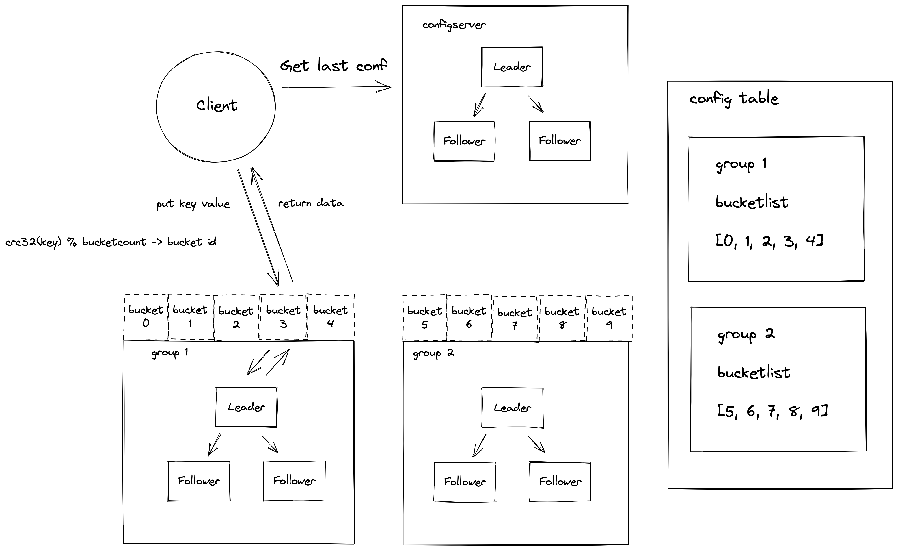

eraft开发组
我们团队致力于解读国外优秀的分布式存储相关开源课程，下面是课程体系图 我们始终坚信优秀的本科教学不应该是照本宣科以及应付考试，一门优秀的课程，应该具备让学生学会思考、动手实践、找到问题、反复试错、并解决问题的能力，同时应该尽量用最直白，最简单的语言传达关键的知识点。作为计算机工业界的工作者，我相信做课程和做技术一样，并不是越复杂越好，应该尽量的让设计出来的东西简单化。 关注我们的最新动态，欢迎关注 https://www.zhihu.com/people/liu-jie-84-52 接下来我们进入正题，如何实现一个分布式系统。
MIT 分布式系统（一）体验分布式 KV 存储系统 eraftkv #
作为系列的开篇，我们将带着大家从顶层体验下分布式系统，我们将忽略系统实现的细节点，直观感受一个分布式系统所具备的能力。本书还是第一个版本，我们还在不断的校对完善中，评论区是放开的，欢迎大家讨论参与本书的优化。
安装 go 编译环境
首先我们需要在电脑上安装好 go 语言编译器，你可以在 https://go.dev/dl/ 官网下载对应你系统版本的安装包。 按指示 https://go.dev/doc/install 安装 golang 编译环境。
编译构建 eraftkv
执行以下命令 (确保你的机器上安装了 Go 语言编译器以及 git, make 等基础工具) 编译很简单，下载代码之后，进入根目录直接 make
git clone https://github.com/eraft-io/eraft.git -b mit6824_lab
cd eraft
make
架构概览
在我们运行 eraftkv 之前我们先概览以下它的架构，以便于我们对于接下来运行的程序功能有清晰的认识。
eraftkv 作为一个分布式 kv 存储系统，其中包含的服务角色以及一些概念需要提前给大家介绍一下。
系统中的一些概念
1.bucket - 它是集群做数据管理的逻辑单元，一个分组的 ShardServer 服务可以负责多个 bucket 的数据。
2.config table - 集群配置表，它主要维护了集群服务分组与 bucket 的映射关系，客户端访问集群数据之前需要先到这个表查询要访问 bucket 所在的服务分组列表。
系统中有三种角色
1.Client - 客户端，它是用户使用我们这个分布式的接入端。
2.ConfigServer - 配置服务器，它是系统的配置管理中心，它存储了集群的路由配置信息。
3.ShardServer - 数据服务器，它是系统中实际存储用户数据的服务器。
请求处理流程
看了架构概览，大家可能有觉得概念有些模糊，我们接下来就分析一个具体的请求示例，看看这个分布式系统是如何工作起来的。
例如现在客户端来了一个 put testkey testvalue 的请求：
1.客户端程序启动运行的时候会从 ConfigServer 获取到最新的路由信息表。
2.put testkey testvalue 操作首先会计算 testkey 的 CRC32 哈希值对集群中的 bucket 数取模算到这个 key 命中了哪个 bucket。
3.之后客户端将 put 请求内容打包成一个 rpc 请求包，发送到集群配置表中负责这个 bucket 的 ShardServer 服务分组。
4.Leader ShardServer 服务收到这个 rpc 请求后并不是直接写入存储引擎，而是构造一个 raft 提案，提交到 raft 状态机，当分组中半数节点以上的 ShardServer 都同意这个操作后 (如果你没有接触过分布式一致性算法，这里可以先不用理解细节，我们会在 Raft 论文解读一章详细解读为什么要这样做)，作为 Leader 的 ShardServer 服务器才能返回给客户端写入成功。
让系统跑起来，体验它！
前面我们构建完 eraftkv 之后，在 eraft 目录有一个 output 文件夹，里面有我们需要运行的 bin 文件。
colin@B-M1-0045 eraft % ls -l output
total 124120
-rwxr-xr-x 1 colin staff 12119296 5 25 20:40 bench_cli
-rwxr-xr-x 1 colin staff 12114784 5 25 20:40 cfgcli
-rwxr-xr-x 1 colin staff 13578848 5 25 20:40 cfgserver
-rwxr-xr-x 1 colin staff 12127328 5 25 20:40 shardcli
-rwxr-xr-x 1 colin staff 13600368 5 25 20:40 shardserver
可执行文件介绍
1.cfgserver
ConfigServer 的可执行文件，系统的配置管理中心，需要首先启动
2.cfgcli
ConfigServer 的客户端工具，它和 ConfigServer 交互用来管理集群的配置
3.shardserver
ShardServer 的可执行文件，它负责存储用户的数据
4.shardcli
ShardServer 的客户端工具，用户可以使用它向集群中写入数据
5.bench_cli
系统的性能测试工具
启动服务
1.启动配置服务器分组
./cfgserver 0 127.0.0.1:8088,127.0.0.1:8089,127.0.0.1:8090
./cfgserver 1 127.0.0.1:8088,127.0.0.1:8089,127.0.0.1:8090
./cfgserver 2 127.0.0.1:8088,127.0.0.1:8089,127.0.0.1:8090
2.初始化集群配置
./cfgcli 127.0.0.1:8088,127.0.0.1:8089,127.0.0.1:8090
join 1 127.0.0.1:6088,127.0.0.1:6089,127.0.0.1:6090
./cfgcli 127.0.0.1:8088,127.0.0.1:8089,127.0.0.1:8090 join 2 127.0.0.1:7088,127.0.0.1:7089,127.0.0.1:7090
./cfgcli 127.0.0.1:8088,127.0.0.1:8089,127.0.0.1:8090 move 0-4 1
./cfgcli 127.0.0.1:8088,127.0.0.1:8089,127.0.0.1:8090 move 5-9 2
3.启动数据服务器分组
./shardserver 0 1 127.0.0.1:8088,127.0.0.1:8089,127.0.0.1:8090 127.0.0.1:6088,127.0.0.1:6089,127.0.0.1:6090
./shardserver 1 1 127.0.0.1:8088,127.0.0.1:8089,127.0.0.1:8090 127.0.0.1:6088,127.0.0.1:6089,127.0.0.1:6090
./shardserver 2 1 127.0.0.1:8088,127.0.0.1:8089,127.0.0.1:8090 127.0.0.1:6088,127.0.0.1:6089,127.0.0.1:6090
./shardserver 0 2 127.0.0.1:8088,127.0.0.1:8089,127.0.0.1:8090 127.0.0.1:7088,127.0.0.1:7089,127.0.0.1:7090
./shardserver 1 2 127.0.0.1:8088,127.0.0.1:8089,127.0.0.1:8090 127.0.0.1:7088,127.0.0.1:7089,127.0.0.1:7090
./shardserver 2 2 127.0.0.1:8088,127.0.0.1:8089,127.0.0.1:8090 127.0.0.1:7088,127.0.0.1:7089,127.0.0.1:7090
4.读写数据
./shardcli 127.0.0.1:8088,127.0.0.1:8089,127.0.0.1:8090 put testkey testvalue
./shardcli 127.0.0.1:8088,127.0.0.1:8089,127.0.0.1:8090 get testkey
5.运行基准测试
./bench_cli 127.0.0.1:8088,127.0.0.1:8089,127.0.0.1:8090 100 put
捐赠
整理这本书耗费了我们大量的时间和精力。如果你觉得有帮助，一瓶矿泉水的价格支持我们继续输出优质的分布式存储知识体系，2.99¥，感谢大家的支持。

开源协议#
「赫蹏」遵循MIT协议开源。